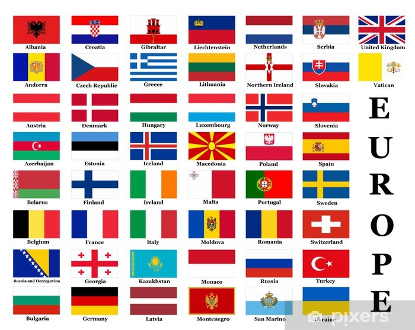

Land i Europa
Europa har 47 land. den største er Russland og den minste Vatikanstaten
Mine favoritt land:
Frankike, Spania, Tyskland, Polen, Norge og Ungarn
Land som jeg hater mest:
Russland, Ukraina, Hviterussland
Hovedstader i Europa
Norge-Oslo
Sverige-Stockholm
Finland-Helsinki
Russland-Moskva
Hviterussland-Minsk
Ukraina-Kiev
Estland-Tallin
Latvia-Riga
Litauen-Villinus
Polen-Warszawa
Tyskland-Berlin
Dannmark-København
Nederland-Ansterdam
Belgia-Brussels
Luxemburg-Luxemburg
Frankrike-Paris
Andorra-Andorra la Vella
Spania-Madrid
Portugal-Lisbon
Italia-Roma
Vatikanstaten-Vatikanstaten
Monaco-Monaco
Hellas-Athen
Nord-Makedonia-Skopje
Kosovo-Pristina
Tyrkia-Ankara
Bulgaria-Sofia
Montenegro-Podgorica
Serbia-Beograd
Bosnia og Hercegovina-Sarajevo
Romania-Bucuretsi
Moldova-Chisinau
Ungarn-Budapest
Kroatia-Zagreb
Slovenia-Ljubljana
Østerrike-Wien
Slovakia-Bratislava
Tsjekkia-Praha
Sveits-Bern
Storbritania-London
Irland-Dublin
Island-Reykjavik
Laget av Antoni Golebiowski